Ushbu hujjat Farzandim ekotizimidagi **bola ilovasi (Parvoz)**ning har bir ekranini ipidan-ignasigacha tavsiflaydi: maqsad, qayerdan ochilishi, UI tuzilishi (yuqoridan-pastga har bir blok), ma'lumot manbai (provider + backend), holatlar (loading/bo'sh/xato), foydalanuvchi amallari va muhim eslatmalar.
Manba: ilova kodi (
farzandim_child/lib) to'liq o'qib chiqildi. Hech qaysi ekran qoldirilmadi.
| Parametr | Qiymat |
|---|---|
| Ilova | Parvoz — bola tomonidagi mobil ilova (farzandim_child) |
| Texnologiya | Flutter (Dart 3), Riverpod (state), go_router (navigatsiya), easy_localization (uz/ru/en) |
| Backend | NestJS + Fastify + Prisma + PostgreSQL (consumer JWT: audience farzandim-consumer) |
| Real-time | Socket.io (voice/video/notification/schedule WS event) + FCM push |
| Dizayn | «Parvoz NIGHT/GLASS» (Stitch redizayn) — deep navy fon #0B1C30, aqua aksent #22D3EE, glass kartalar, Plus Jakarta Sans / Inter |
| Tema | Light asosiy (Duolingo-uslub) + Dark fallback; themeModeProvider (light/dark/system) |
| Ekranlar soni | ~33 ta route + native overlay (bloklash) + widget-darajadagi SOS |
#0B1C30 / light #F8F9FF#213145 / #162B45 / light #E5EEFF / oq#22D3EE / light #0E7490#F8F9FF / light #0B1C30; muted: #CBDBF5 / #5A6B66#13C28B, danger #FB3B4E, warning #FF9F1C, gold #FFC83DAppColors.parvoz*): parvozBg, parvozGreen, parvozSurface, parvozText, parvozTextDim, parvozBorder — ba'zi ekranlar hali shularda.Boshlang'ich route: /splash. SplashScreen pairing + consent + permissions holatini tekshirib to'g'ri ekranga yo'naltiradi.
Router refresh: refreshListenable — pairingStateProvider yoki consentStateProvider o'zgarganda redirect qayta hisoblanadi (router QAYTA yaratilmaydi — aks holda PairingScreen unmount bo'lardi).
Redirect qoidalari (tartib bilan):
consent == notGiven va ekran /consent//splash emas → /consent. Rozilik berilgach /consentda bo'lsa → /splash./splash, /pairing, /pair-waiting, /qr-scan, /consent, /onboarding./welcome → /pairing./pairing./pairingda → /splash (permission tekshiruvi uchun).kEnableContentLibrary == false): /analytics, /videos, /audiobooks, /contests, /ranking va h.k. → /dashboard (deep-link himoyasi).Sahifa o'tish animatsiyasi: Dashboard'dan boshqa ekranga _slidePage — 250ms, easeOutCubic, o'ngdan-chapga slide + fade (drill-down hissi).
| Route | Ekran | Guruh |
|---|---|---|
/splash |
SplashScreen | Auth |
/consent |
ConsentScreen | Auth |
/welcome |
WelcomeScreen (eski → /pairing) |
Auth |
/onboarding |
OnboardingScreen (qiziqishlar) | Auth |
/pairing |
PairingScreen (5 raqamli kod) | Auth |
/pair-waiting |
PairWaitingScreen | Auth |
/qr-scan |
QrScannerScreen | Auth |
/permissions |
PermissionsScreen (runtime) | Auth |
/permission-setup |
PermissionSetupScreen (4 sistema) | Auth |
/dashboard |
ChildDashboardScreen | Asosiy |
/account-edit |
AccountEditScreen | Akkaunt |
/settings |
SettingsScreen | Akkaunt |
/profile |
ProfileScreen (XP/yutuq) | Akkaunt |
/notifications |
NotificationsScreen | Akkaunt |
/content |
ContentHubScreen | Media |
/videos |
VideosFeedScreen | Media |
/video-player |
YouTube / Reels / Classic player | Media |
/audiobooks |
AudiobooksFeedScreen | Media |
/audio-player |
AudioPlayerScreen | Media |
/books |
BooksFeedScreen | Media |
/books/pdf |
PdfViewerScreen | Media |
/articles |
ArticlesFeedScreen | Maqola |
/articles/view |
ArticleViewScreen | Maqola |
/contests |
ContestsScreen | Konkurs |
/contest-start |
ContestStartScreen | Konkurs |
/contest-quiz |
ContestQuizScreen | Konkurs |
/certificate |
CertificateScreen | Konkurs |
/ranking |
RankingScreen | Reyting |
/video-recording |
VideoRecordingScreen | Aloqa |
/video-preview |
VideoPreviewScreen | Aloqa |
/voice-chat |
VoiceChatScreen | Aloqa |
/schedules |
SchedulesScreen | Jadval |
/analytics |
AnalyticsScreen | Statistika |
| native overlay | Ilova bloklash + UnlockRequestModal | Cheklov |
| widget | SosButton (alohida route yo'q) | SOS |
/splash)splash/presentation/screens/splash_screen.dartinitialLocation. Shuningdek Onboarding/Pairing/PairWaiting/QrScanner ekranlaridan context.go('/splash') bilan — markaziy routing mantiqini bir joyda ushlab turish uchun.Scaffold (parvozBg) → Center > Column: 112×112 dumaloq logo (ClipOval > Image.asset('child_logo_icon.png')) → 24px → "Parvoz" (parvozText, 28px bold) → 24px → CircularProgressIndicator(parvozGreen). Animatsiya yo'q.ConsentStorage.isParentConsentGiven() (SharedPreferences parent_consent_v1), parentUid/childId/onboarding_seen_v1 prefs, UsageStatsService (hasPermission, hasOverlayPermission), Permission.locationAlways/ignoreBatteryOptimizations./consent; 2) parentUid==null || childId==null → /pairing; 3) onboarding_seen_v1 != true → /onboarding; 4) kIsWeb → /dashboard; 5) 4 sistema ruxsati to'liq → /dashboard, aks holda → /permission-setup./dashboard./consent)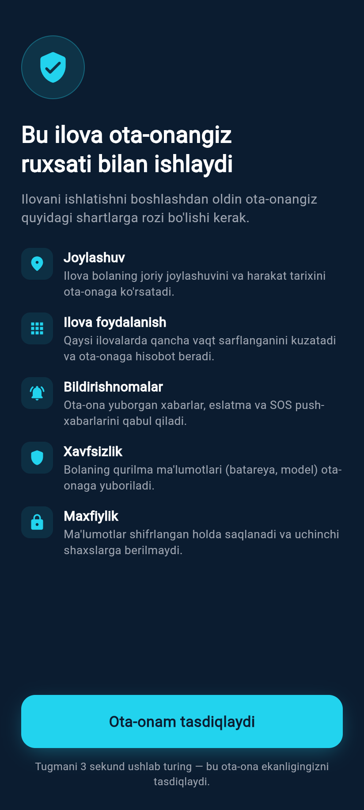
consent/presentation/screens/consent_screen.dartSplashScreen → isParentConsentGiven()==false. Router himoyasi — ruxsatsiz o'tib bo'lmaydi.Scaffold(parvozBg) → scrollable: _ShieldBadge (72×72 yashil doira + verified_user_rounded) → sarlavha "Bu ilova ota-onangiz ruxsati bilan ishlaydi" (26px, w800) → tavsif → 5 ta _ConsentBullet (Joylashuv / Ilova foydalanish / Bildirishnomalar / Xavfsizlik / Maxfiylik, har biri 36×36 ikon + sarlavha + tavsif) → _LongPressConfirmButton (60px, parvozGreen, ichida parvozBlue progress fill chap→o'ng) → ko'rsatma "Tugmani 3 sekund ushlab turing".consentStateProvider.confirm() → ConsentStorage → prefs parent_consent_v1=true. AnimationController(3s).HapticFeedback.lightImpact; 3s'dan oldin qo'yib yuborilsa reverse(); 3s to'lganda mediumImpact + "Tasdiqlanmoqda..." + spinner; tugagach router avtomatik o'tadi./welcome)welcome/presentation/screens/welcome_screen.dartScaffold(parvozBg) → logo (child_app_icon_white.png, fadeIn + slideY) → FaroMascot(body, 220) (fadeIn + scale easeOutBack) → tagline → CTA tugma (parvozGreen, "Boshlash" + arrow_forward, → /pairing) → codeHint./pairing)./onboarding)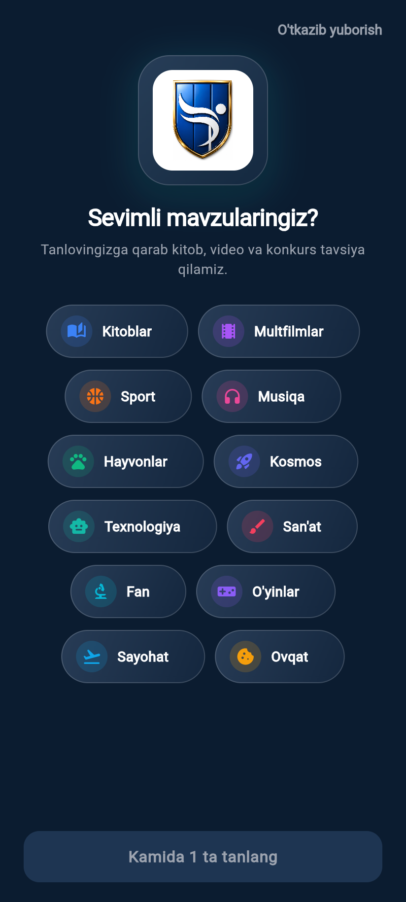
onboarding/presentation/screens/onboarding_screen.dartSplashScreen → pairing bor, onboarding_seen_v1 != true._LogoHero (132×132 glass + yashil glow) → sarlavha + tavsif → _SelectedCounter (yashil pill, 0 da ko'rinmaydi) → chip grid (Wrap, kInterestOptions — har biri 32×32 ikon + matn + tanlanganda yashil check, layout shift yo'q, ketma-ket fadeIn+moveY) → pastki tugma ("Boshlash (N ta)" / disabled "minSelect").kInterestOptions (statik), interestsSyncServiceProvider → PUT /children/me/interests, prefs onboarding_seen_v1 + child_interests_pending_v1.selectionClick toggle; "O'tkazib yuborish" → faqat seen=true; "Boshlash" → prefs pending + backend sync → /splash./pairing)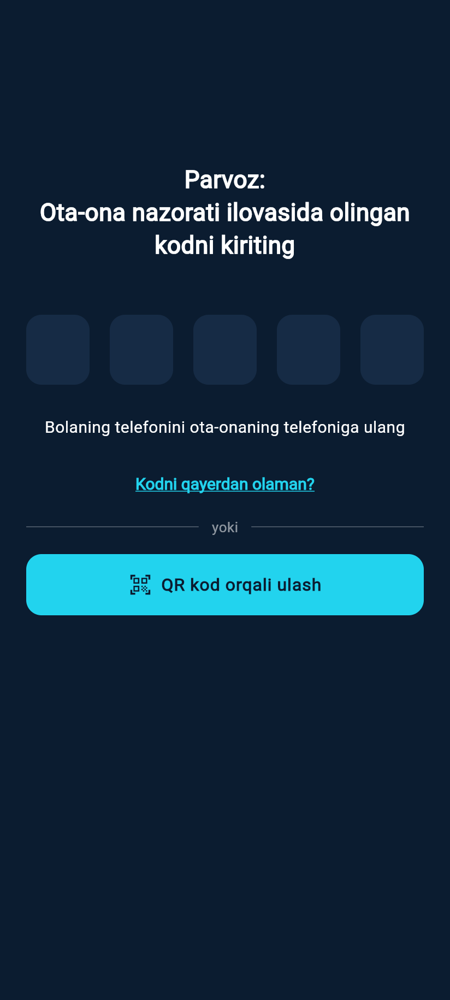
pairing/presentation/screens/pairing_screen.dartparentUid/childId == null); Welcome "Boshlash".Scaffold(parvozBg) → sarlavha (appName + subtitle) → 5 ta kod katakchasi (58×64, to'lganda 2px parvozGreen border, digitsOnly, maxLength:1) → hint → "Yordam" havola (AlertDialog) → "YOKI" ajratuvchi → "QR kod orqali ulash" tugma (parvozGreen, → context.push('/qr-scan')) → _isPairing bo'lsa spinner.pairingStateProvider.tryPair(code) → POST /api/auth/child-pair. PairingStatus: pairing/paired/error/awaitingParent./splash; 409 AWAITING_PARENT → /pair-waiting; xato → SnackBar + katakchalar tozalanadi._isPairing guard ikki marta yuborishni to'xtatadi./pair-waiting)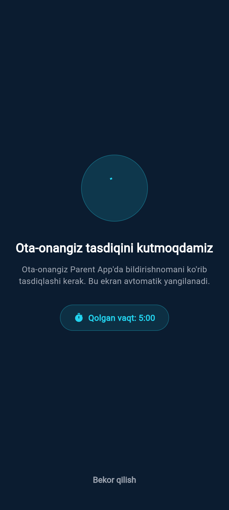
pairing/presentation/screens/pair_waiting_screen.dartAWAITING_PARENT_CONFIRM). Tasdiqlansa avto-dashboard.pairingStateProvider (pairRequestId, pairRequestExpiresAt); checkPairStatus(id) → GET /child-pair-status/:id (Pending/Approved/Rejected/Expired/Error sealed).completeFromApprovedPair → /splash) / REJECTED / EXPIRED / ERROR (jim log).Timer.periodic(3s) polling + Timer.periodic(1s) countdown, dispose'da to'xtaydi; _polling flag./qr-scan)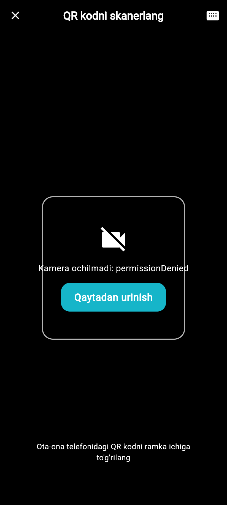
pairing/presentation/screens/qr_scanner_screen.dartfarzandim:repair:{token} QR'ni skanerlab tez qayta ulanish (repair) → POST /api/auth/repair-redeem._PairSuccessView (gradient + ConfettiWidget + 132/92px check elasticOut + "Muvaffaqiyatli ulandingiz!" + 2200ms → /splash); (B) Qo'lda paste _WebPasteTokenView (clipboard + TextField + "Ulanish"); (C) Kamera (MobileScanner + 260×260 viewfinder + status panel; starting/granted/denied/error holatlar).POST /auth/repair-redeem ({token, platform}) → accessToken/refreshToken/user.id/child.id/child.parentId; tokenStorageProvider; completeFromApprovedPair._humanizeCameraError() O'zbekcha xatolar./permissions)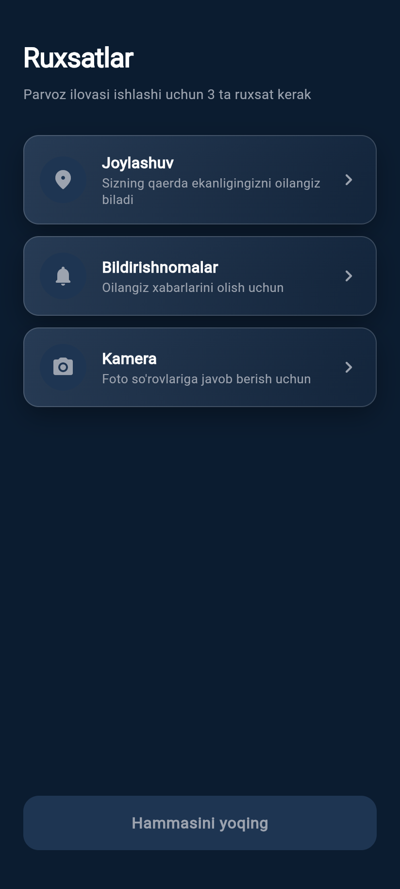
permissions/presentation/screens/permissions_screen.dartparvozGlass, 48×48 ikon, yoqilsa yashil check) → "Davom etish" (hammasi yoqilsa faol).permission_handler (locationWhenInUse→locationAlways, notification, camera); locationServiceProvider.start() + backgroundServiceProvider.start()._onContinue → /permission-setup.locationAlways Sozlamalarga olib chiqadi; har request() try/catch./permission-setup) — yangilangan: 4 ta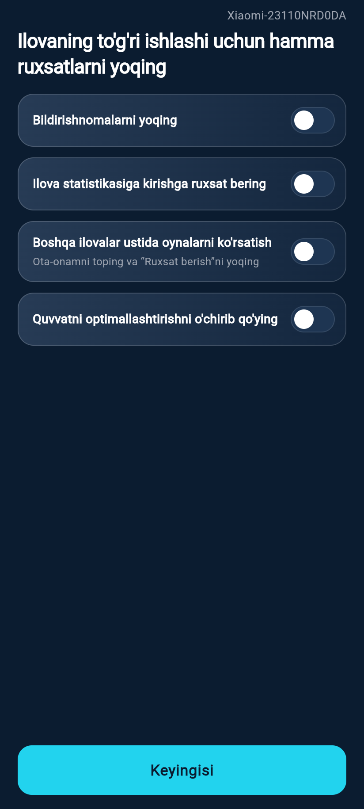
permissions/presentation/screens/permission_setup_screen.dartPACKAGE_USAGE_STATS), Ilova ustida ko'rsatish (SYSTEM_ALERT_WINDOW — bloklash ekrani), Quvvat optimizatsiyasi (xizmat tirik qolishi). (Avval 10 ta edi — qisqartirildi.)ListView 4 ta _PermissionCard (glass + custom iOS-style toggle 50×30, AnimatedAlign 180ms) → "Keyingisi" (hammasi yoqilsa parvozGreen).UsageStatsService (hasPermission/hasOverlayPermission/openSettings/openOverlaySettings), Permission.notification/ignoreBatteryOptimizations. WidgetsBindingObserver → resumed'da _checkAll() avto.PACKAGE_USAGE_STATS + SYSTEM_ALERT_WINDOW standart permission_handler'da yo'q → UsageStatsService (native kanal). _toggle() try/catch./dashboard)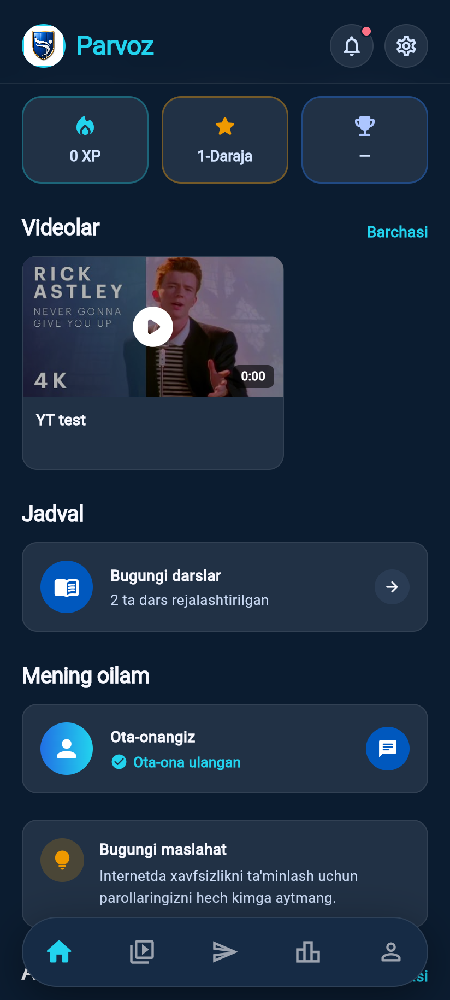
dashboard/presentation/screens/child_dashboard_screen.dart/permission-setup'dan keyin; notifications "SOS" tugmasidan._GlassHeader, sticky, BackdropFilter blur 20): chap — 40×40 logo + "Parvoz" (aqua, 24px w700); o'ng — bildirishnoma (_IconBtn, o'qilmagan bo'lsa qizil nuqta badge) + sozlamalar tugmalari._StatCard: XP (local_fire, ${n}k XP), Daraja (star, ${level}-Daraja, levelForXp), Reyting (emoji_events, #${regionRank}). Har biri 18px radius + aksent border.ListView (196px), _VideoCard (240px, thumbnail 128px + play overlay + duration + sarlavha). Bo'sh → yashirin. Bosish → /video-player./schedules. (todaySchedulesProvider)/voice-chat). (parentInfoProvider)audioPlayerProvider.play → /audio-player. (forYouAudiobooksProvider)AppUsageList(limit:5) + "Hammasini ko'rish (N)" → /analytics. (dailyUsageProvider)pairingStateProvider, gamificationProfileProvider, allUsersProvider (viloyat reytingi), childDataStreamProvider, topVideosProvider, todaySchedulesProvider, parentInfoProvider, forYouAudiobooksProvider, dailyUsageProvider, unreadNotificationsCountProvider, sosStateProvider.CircularProgressIndicator; pull-to-refresh (analytics + avatar + stream invalidate); bo'limlarda o'z holatlari.Timer.periodic(30s); lifecycle resumed → analytics invalidate; permission guard — usage/overlay/battery yo'q bo'lsa /permission-setup; streak update initState'da; glass header Positioned Stack ustida.dashboard/.../widgets/child_bottom_navigation.dart): suzuvchi pill (radius 999, soya), 5 _NavItem — home(/dashboard go) / video_library(/content) / send(/voice-chat) / leaderboard(/contests) / person(/profile). Faol — aqua + AnimatedScale(1.12). Ustida MiniAudioPlayer. kEnableContentLibrary==false → SizedBox.shrink()._SosCard): qizil karta, hold-to-send 54px tugma — idle/holding(progress + qolgan soniya)/sending(spinner)/sent(yashil check, 4s reset)/error(to'q sariq). Listener (pointer) — 16px siljisa _cancelHold; AnimationController(3s). sosStateProvider; POST /api/children/:childId/sos-alerts (lat/lng/accuracy — avval getLastKnownPosition, keyin getCurrentPosition 3s timeout). Backend → ota-onaga FCM HIGH + WS.analytics/.../widgets/app_usage_list.dart): parvozGlassFlat, har _UsageRow — 40×40 ikon (iconUrl→iconBase64→fallback), nom, subtitle (cheklovsiz: vaqt; to'liq blok: qizil "Bloklangan"; limit: "used/limit" + progress bar), trailing "Qoldi/Tugadi". Manba: dailyUsageProvider + childAppLimitsProvider + installedAppsMapProvider. <1 daqiqa + limitsiz ilovalar yashirin./account-edit)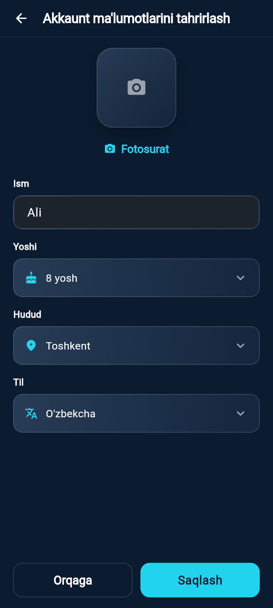
account/presentation/screens/account_edit_screen.dartParvozHeader → 120×120 avatar (tap → _pickPhoto, tanlangan bytes → backend URL → placeholder) + "Rasm o'zgartirish" → ism TextField → yosh picker (AgeListDialog 5-18) → viloyat picker (RegionPickerBottomSheet) → til picker (_LanguagePickerSheet uz/ru/en) → pastki "Orqaga"/"Saqlash".childDataStreamProvider (bir martali yuklash, _hasLoaded flag), childRepositoryProvider.uploadMyAvatar/updateMyProfile.?t=ms; til → context.setLocale./settings)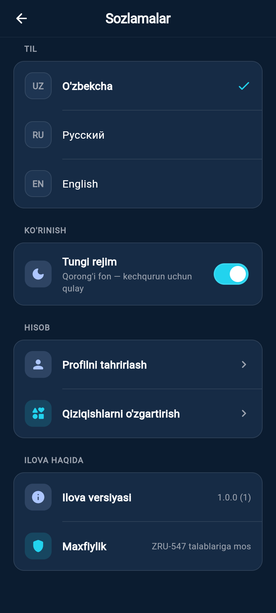
settings/presentation/screens/settings_screen.dart_Header (orqaga + "Sozlamalar") → ListView: TIL (3 _LangRow UZ/RU/EN, tanlanganda yashil check, → setLocale) → KO'RINISH (_ToggleRow "Tungi rejim" Switch → themeModeProvider.toggle()) → HISOB ("Profilni tahrirlash" → /account-edit; "Qiziqishlar" → InterestsEditSheet) → ILOVA HAQIDA (versiya PackageInfo, "Maxfiylik" ZRU-547).canPop bo'lsa pop, aks holda /dashboard./profile)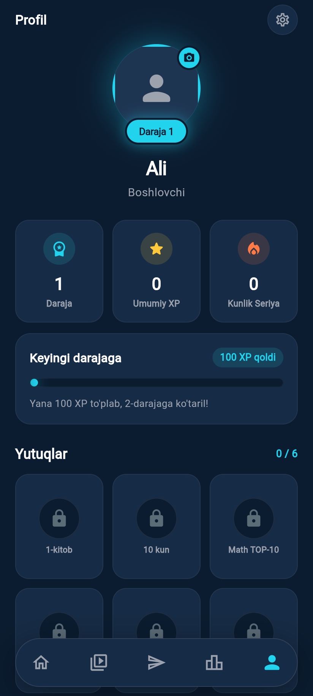
gamification/presentation/screens/profile_screen.dart_TopBar (sozlamalar → /settings) → _Hero (116×116 avatar + 3.5px aqua ring + glow; edit badge → /account-edit; "Daraja N" badge; ism + status) → _StatsRow (Daraja / Umumiy XP / Kunlik Seriya) → _ProgressCard (keyingi darajaga progress, xp%100) → _Achievements (GridView 3 ustun, ochilgan rangli / qulflangan lock) → bottom nav + ConfettiWidget.gamificationProfileProvider, childAvatarUrlProvider, Achievements.all.ref.listen + _previousAchievementIds) → confetti + heavyImpact + SnackBar; _initialLoaded flag birinchi yuklashda confetti bermaydi./notifications)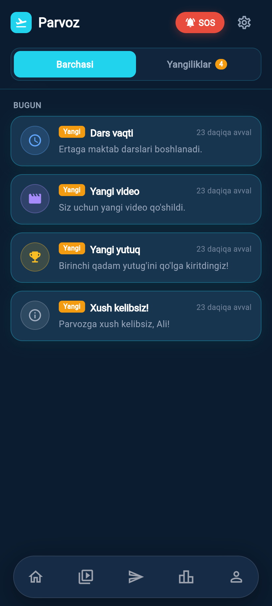
notifications/presentation/screens/notifications_screen.dartBackdropFilter blur 18): _TopBar (logo + "Parvoz" + qizil "SOS" pill → /dashboard + sozlamalar) + _FilterTabs ("Hammasi"/"O'qilmagan(N)"); _Body: sana bucket'lar (Bugun/Kecha/Avvalroq) + _NotificationCard (Dismissible swipe-delete; o'qilmagan — yashil mix + glow + "Yangi" chip + 44×44 medallion type.color; tap → markAsRead + relatedRoute); bo'sh → Faro faceSleeping; loading → 6 shimmer skeleton.notificationsProvider, filteredNotificationsProvider, notificationTabProvider, unreadNotificationsCountProvider, backendNotificationRepositoryProvider (markAsRead/delete).fadeIn+slideY, 40ms oraliq); real-time yo'q — manual invalidation; pull-to-refresh./content)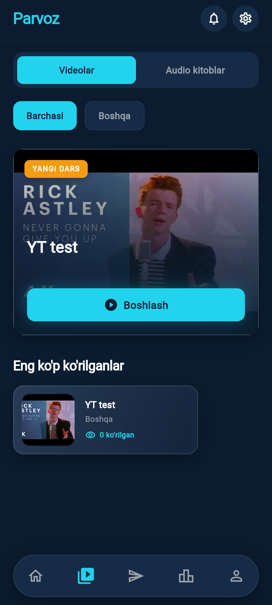
content/presentation/screens/content_hub_screen.dartpvGreen, AnimatedContainer 250ms) → TabBarView:
_ParvozChips (kategoriya, "Barchasi") → _ParvozHeroCard (280px, "YANGI DARS" badge + "Boshlash") → "Siz uchun tavsiyalar" (_ParvozVideoHList, "Barchasi" → /videos) → "Eng ko'p ko'rilganlar" (_ParvozWideCard + ko'rishlar). Bosish → /video-player._ParvozAudioChips → _ParvozAudioHero ("Eshitish" + bookmark) → "Siz uchun" → "Eng ko'p eshitilganlar" (_ParvozAudioRow) → Kitoblar seksiyalari (backendBooksProvider, kategoriya: school/adabiyot/boshqalar → /books/pdf).effectiveVideosProvider/_parvozCategoryProvider, effectiveAudiobooksProvider/forYouAudiobooksProvider/mostListenedProvider/audiobookCategoryFilterProvider, backendBooksProvider. CachedNetworkImage (offline kesh).extendBody; bo'sh → _ParvozEmpty./videos)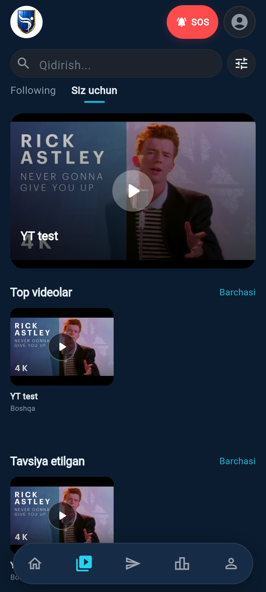
videos/presentation/screens/videos_feed_screen.dartDashboardTopHeader (avatar → /account-edit) → VideosSearchBar → VideoTabs → RefreshIndicator → HeroVideoCard + VideoSection "Top videolar"/"Tavsiya etilgan" → bottom nav.heroVideoProvider/topVideosProvider/recommendedVideosProvider/filteredVideosProvider, backendVideosProvider (pull-to-refresh invalidate, 5 daq kesh chetlab), videoSearchQueryProvider, videoFilterProvider.EmptyStateMascot(faceSad) + "Filterni tozalash"./video-player) — 3 variantRouter VideoModel turiga qarab tanlaydi: isYouTube → YouTube; isReels → Reels; aks holda → Classic.
A. YoutubePlayerScreen (videos/.../youtube_player_screen.dart): YouTube embed ${apiUrl}/content/yt/$id proxy sahifa orqali (xato 153 oldini olish — Chrome UA). Portret: 16:9 WebViewWidget + fullscreen tugma + "To'liq ekranda ko'rish" + tashqi YouTube (open_in_new). Landscape: immersiv. markViewed initState'da.
B. ReelsPlayerScreen (videos/.../reels_player_screen.dart): vertikal PageView (TikTok-uslub), har reel VideoPlayer (loop, tap → play/pause toggle, swipe → keyingi). effectiveVideosProvider (!isYouTube && isReels). _viewed Set bilan dedupe markViewed.
C. ClassicVideoPlayerScreen (videos/.../classic_video_player_screen.dart): landscape MP4 player. Controls overlay (gradient skrim, markaziy play/pause/replay, top bar, progress slider pvGreen, lock). Double-tap → contain↔cover; tezlik/uyqu taymeri/ekran qulfi (PlayerSettingsBottomSheet, playerSettingsProvider). 20s timeout → retry UI. reportDuration agar davomiylik noma'lum. dispose'da portret + edgeToEdge.
/audiobooks)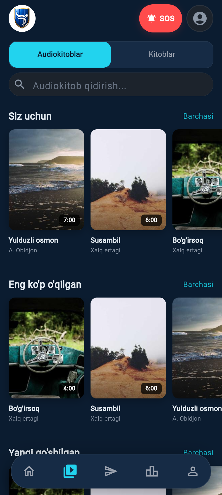
audiobooks/presentation/screens/audiobooks_feed_screen.dartDashboardTopHeader → _TopTabs ("Audiokitoblar"/"Kitoblar") → TabBarView: Tab0 AudiobooksSearchBar + AudiobookSection ×3 ("Siz uchun"/"Eng ko'p o'qilgan"/"Yangi qo'shilgan"); Tab1 BooksFeedBody.forYouAudiobooksProvider/mostListenedProvider/newestAudiobooksProvider/filteredAudiobooksProvider. Karta bosish → audioPlayerProvider.play./audio-player)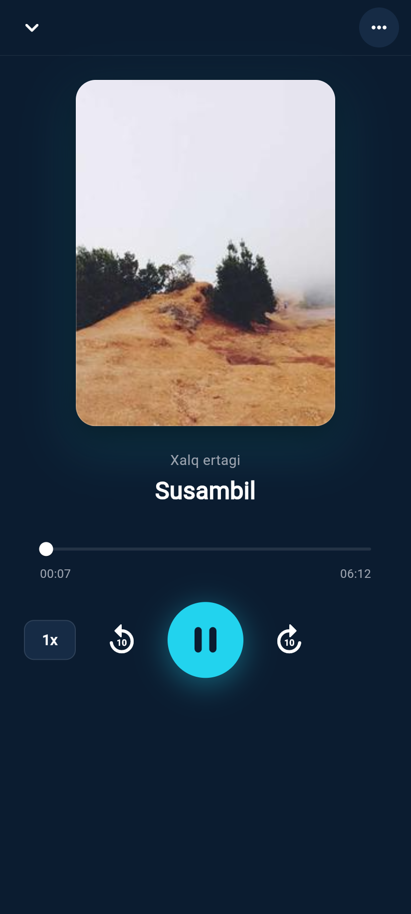
audiobooks/presentation/screens/audio_player_screen.dart_PlayerTopBar (yopish + uyqu taymeri chip + menu) → _Cover (3:4, glass + yashil glow) → muallif + sarlavha → _SliderRow → _Controls (tezlik chip / -10s / katta play-pause 76px / +10s)._SpeedPickerSheet (0.5–2.0×) · _AudioMenuSheet · _SleepTimerSheet (5–45 daq) · _DetailsSheet (tafsilot + hashtag).audioPlayerProvider (currentBook/isPlaying/position/duration/sleepTimer), audioSpeedProvider. !hasAudio → avto-pop./books)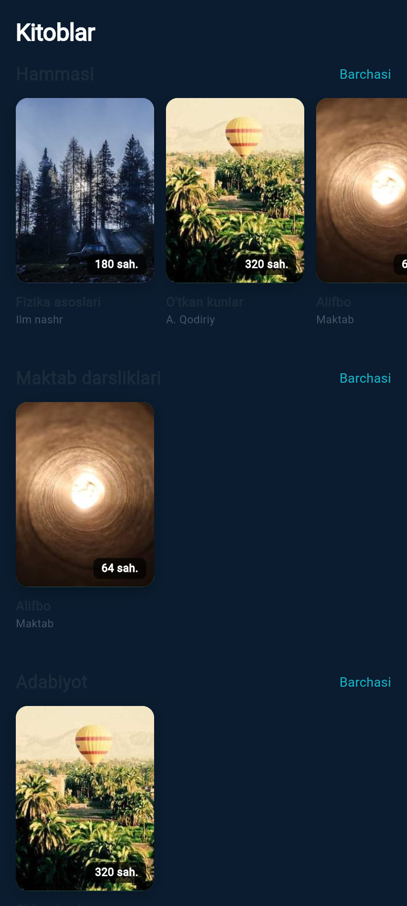
books/presentation/screens/books_feed_screen.dartasyncBooks.when: loading spinner / xato _ErrorView (retry) / data RefreshIndicator + BookSection ("Hammasi"/"Maktab darsliklari"/"Adabiyot"/"Boshqalar") / bo'sh _EmptyView.backendBooksProvider. Karta → /books/pdf.AudiobooksFeedScreen ichida BooksFeedBody sifatida ishlatiladi./books/pdf)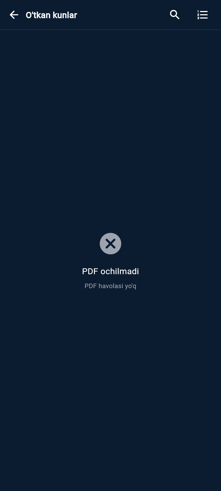
books/presentation/screens/pdf_viewer_screen.dartPDFView) → _PageScrubber (slider + first/last page).book.pdfUrl → Dio.download → tmp book-{id}.pdf (kesh: File.exists); markRead initState fire-and-forget. flutter_pdfview (vertikal, FitPolicy.WIDTH)./articles)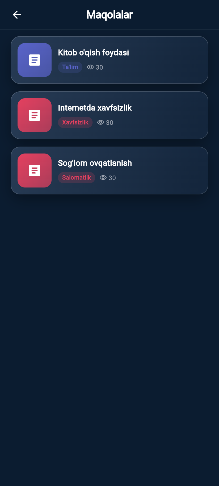
articles/presentation/screens/articles_feed_screen.dartParvozHeader ("Maqolalar" + orqaga) → backendArticlesProvider.when: loading spinner / error _Empty(wifi_off + "Qayta urinish") / bo'sh _Empty(menu_book) / data RefreshIndicator + ListView.separated → ArticleCard (tap → /articles/view, extra: ArticleModel).AlwaysScrollableScrollPhysics (pull-to-refresh bitta elementda ham); bo'sh va xato uchun har xil ikon/matn./articles/view)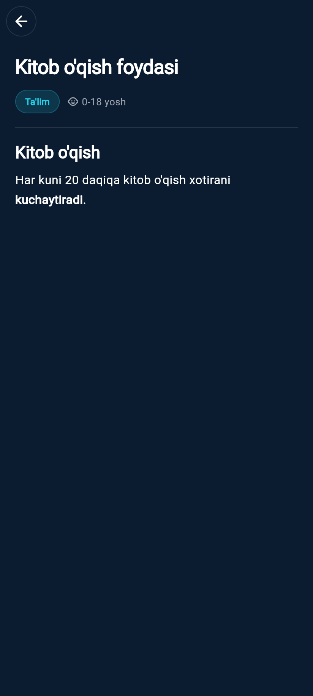
articles/presentation/screens/article_view_screen.dartCustomScrollView: SliverAppBar (cover bo'lsa 240px FlexibleSpaceBar + gradient overlay; doiraviy orqaga tugma) → kontent: sarlavha (26px bold) + kategoriya yashil pill + "yosh guruhi" + divider + MarkdownBody (selectable, maxsus _markdownStyle — p/h1/h2/h3/blockquote/link).ArticleModel (extra), markRead(article.id) initState fire-and-forget.expandedHeight:0; flutter_markdown./contests)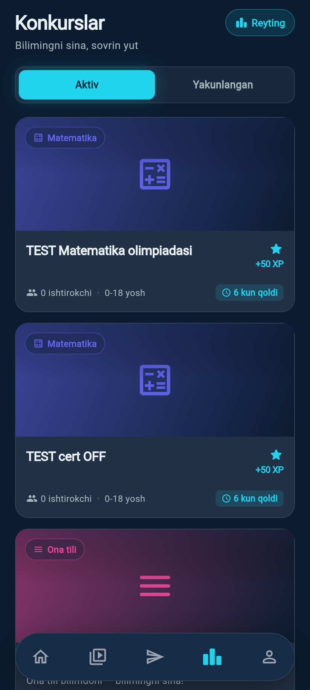
contests/presentation/screens/contests_screen.dart/ranking) → ContestsTabs (aktiv/yakunlangan) → _List: loading spinner / xato _ErrorState(retry) / bo'sh (84×84 ikon doirasi) / ListView ContestCard.contestsActiveTabProvider, activeContestsProvider/finishedContestsProvider, contestsLoading/ErrorProvider, backendContestsProvider. Palitra CP(context.adaptive.isDark)./contest-start)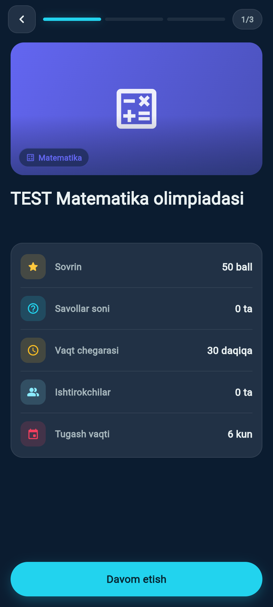
contests/presentation/screens/contest_start_screen.dart_TopBar (orqaga + 3 progress segment + "N/3" pill) → PageView (swipe o'chiq):
_ContestInfoStep: 200px rasm + SubjectBadge → sarlavha + tavsif → _StatGroup (Sovrin/Savollar/Vaqt/Ishtirokchilar/Tugash) → "Davom etish"._ContestRulesStep: "Konkurs qoidalari" + 5 _RuleCard (Vaqt/Qaytarish yo'q/Internet/Halol/Bonus) → "Davom etish"._ContestReadyStep: pulsing trophy (180/124px, _pulseController) + "Tayyormisiz?" + "BOSHLASH" → _startCountdown → _Countdown (3..2..1, elasticOut) → pushReplacement('/contest-quiz').ContestModel (extra). pushReplacement — quiz tugagach /contestsga qaytadi./contest-quiz)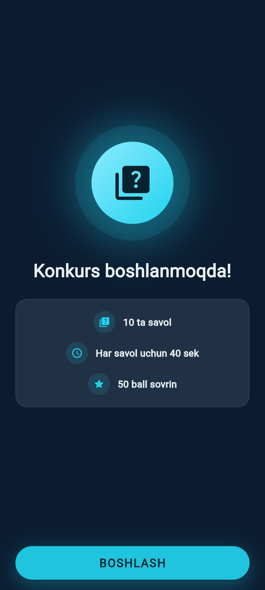
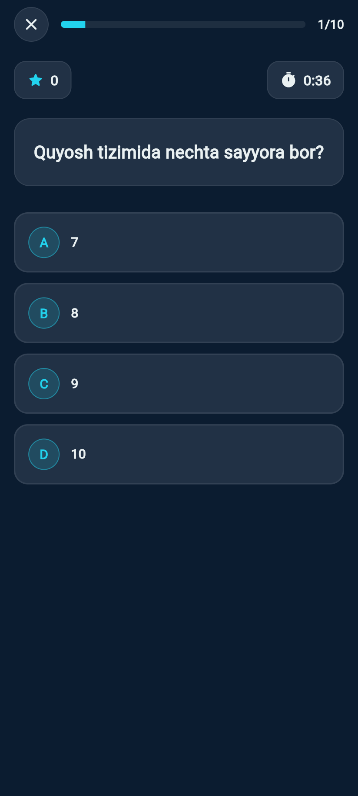
contests/presentation/screens/contest_quiz_screen.dartquizProvider(contest).status bo'yicha: loading → _LoadingScreen; intro → _IntroScreen (pulsing quiz + 3 stat + "BOSHLASH"); playing/paused → _QuestionScreen; finished → _ResultScreen. Ustida ConfettiWidget.
_QuestionScreen: _QuestionTopBar (close → pause dialog + LinearProgressIndicator + "N/10") → _StreakBadge (streak>=3) → _ScoreTimerRow (score + taymer, <=10s qizil) → savol kartasi + variantlar _OptionCard (to'g'ri catMint + check / xato danger + cancel, harf badge A/B/C) + tushuntirish bloki. Pause dialog ("Chiqish" → quit+/contests / "Davom etish" → resume)._ResultScreen: g'olib trophy / mag'lub psychology → "Tabriklaymiz!"/"Yaxshi urinish!" → 5 _ResultStat (To'g'ri/Ball/Aniqlik/Streak/Vaqt) → g'olib bo'lsa "Sertifikat" (p.gold) → "Ulashish" (share_plus) + "Yopish" (/contests).quizProvider(contest) (QuizState), certificateRepositoryProvider.fetch(attemptId).<=10s qizil; haptic to'g'ri/xato/timeout; pauzada progress saqlanmaydi./certificate)contests/presentation/screens/certificate_screen.dartRepaintBoundary pixelRatio:3).ParvozHeader → RepaintBoundary > _Certificate (340px, gold gradient ramka, deep navy ichki, radial dekoratsiyalar, "PARVOZ" brend, kubok medallion, "SERTIFIKAT", childNick, olimpiada nomi, natija paneli Natija/Ball/Fan, sana + certificateId) → _ShareButton ("Saqlash / Ulashish").CertificateData (extra). Share → toImage(3x) → tmp PNG → Share.shareXFiles._sharing flag; palitra qat'iy (theme'siz, doim premium); childNick (to'liq ism emas — maxfiylik); O'zbek oy nomlari./ranking) — yangi Stitch redizayn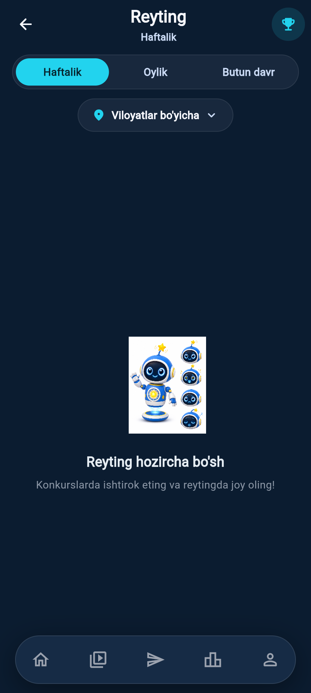
ranking/presentation/screens/ranking_screen.dart_Header (orqaga + "Reyting" + range subtitle + trophy) → _RangePills ("Haftalik"/"Oylik"/"Butun davr", aqua sliding indicator Cubic(.34,1.4,.5,1) 320ms) → _RegionFilter ("Viloyatlar bo'yicha" pill → _RegionSheet) → _List:
_Podium (2-1-3, medal rangli halqa + glow + raqam badge, 1-o'rin 88px + trophy);_RankTile (4+, raqam + 44px avatar + ism + "SIZ" pill + viloyat + _ScorePill gold star), stagger fadeIn+moveY 45ms;_StickyCurrentUser (currentRank>3 bo'lsa pastda aqua pin).filteredUsersProvider, timeRangeProvider, selectedRegionProvider, currentUserRankProvider, rankingTabProvider, backendRankingProvider, scoreFor(user,range). _RegionSheet — UzbekistanRegions.all.users.length<3 → Faro faceExcited bo'sh holat; pull-to-refresh; sticky padding 180/120./video-recording)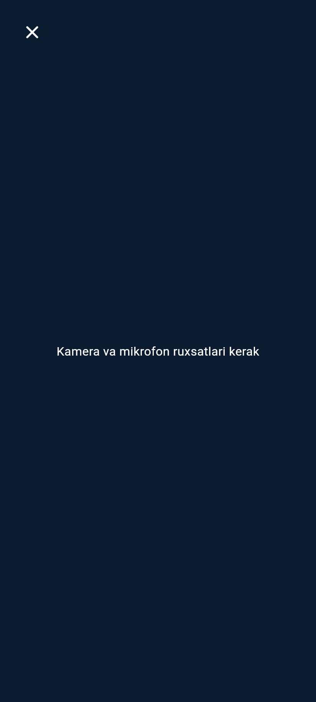
video_message/presentation/screens/video_recording_screen.dart/video-recording?requestId=<ID>; yoki bola o'zi (requestId null).RecordingProgressRing (280px, 0→1) + CircularCameraPreview (dumaloq selfie) + timer "X/15 sek" + RecordButton (long-press → yoz, qo'yib yubor → to'xta).VideoRecorderService (init/start/stop, maxDurationSeconds=15). Yozilgach VideoPreviewArgs bilan pushReplacement('/video-preview').Permission.camera+microphone ikkisi ham; min 1500ms (qisqa → o'chiriladi + snackbar); 15s avto-stop; background/dispose → fayl o'chadi./video-preview)video_message/presentation/screens/video_preview_screen.dartVideoPlayer (loop, ovozsiz) + upload paytida progress halqa → status matni ("X soniya"/"Yuklanmoqda X%"/"Yuborildi") → tugmalar ("Bekor" → fayl o'chir + pop; "Yuborish" → upload).videoMessageUploadProvider (idle/uploading/sent/error); BackendVideoMessageRepository.sendMessage(receiverId:parentUid, videoFile, durationSeconds, onProgress) → POST /api/video-messages. Tugagach videoMessagesProvider invalidate.sendBytes()./voice-chat)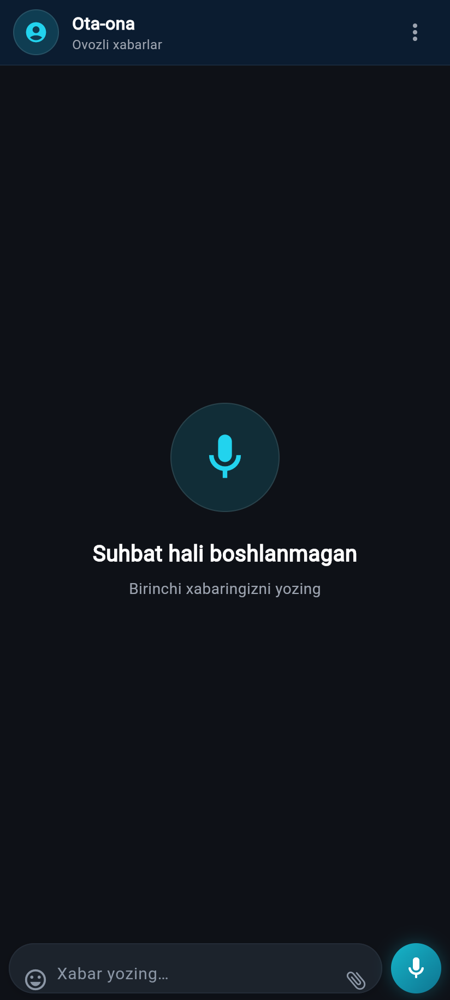
voice_message/presentation/screens/voice_chat_screen.dart_ChatHeader (avatar + ota-ona nomi + holat + more_vert → ChatSettingsScreen) → ChatBackground → ListView (VoiceItem→ChatBubble, VideoItem→RoundVideoBubble, avto-scroll) → bo'sh _EmptyState(mic) → ChatInputBar (videocam + mic long-press + matn + attach; yozish paytida to'lqin vizualizatsiya + taymer + delete).chatMessagesProvider (voice+video merge ASC); voiceMessagesProvider/videoMessagesProvider (WS voice:received/video:received refresh); sendText/sendMedia; AudioRecorderService (amplitude stream); AudioPlayerManager.showRoundVideoRecorder → VideoCompress → upload; ekran ochilganda markAllRead() bulk.readAsBytes .webm, compress yo'q; mobile LowQuality (413 himoya); background → yozish avto-bekor; ChatTopToast./schedules)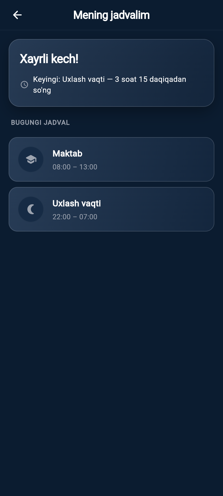
schedules/presentation/screens/schedules_screen.dartParvozHeader → loading skeleton / xato / bo'sh EmptyStateMascot(faceSleeping) / data: _StatusCard (salomlashuv vaqtga qarab + "Hozir:"/"Keyingi: N daqiqa") + ParvozSectionLabel "Bugungi jadval" + ScheduleTile ro'yxati (isCurrent).activeSchedulesProvider (GET /children/:id/routines), todayRoutinesProvider (/routines/today → today/current/next).Timer.periodic(1 daq) → status yangilanadi; salomlashuv soatga qarab; read-only./analytics)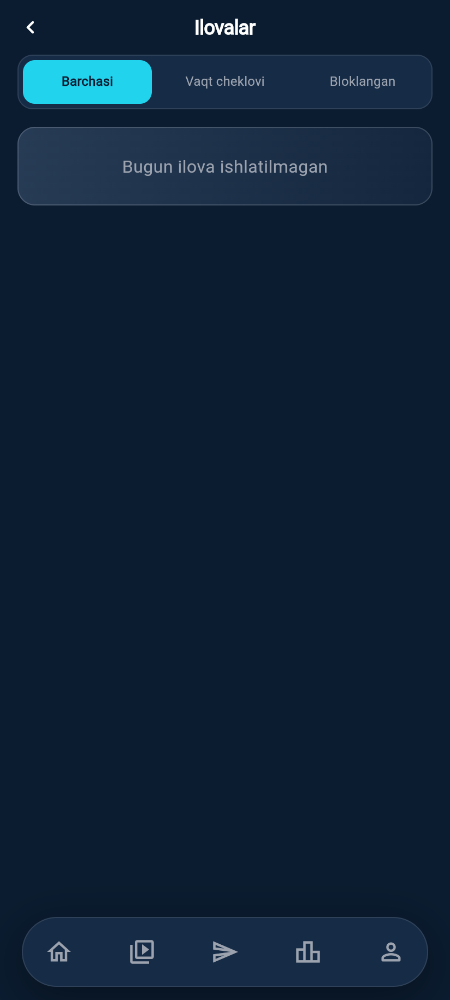
analytics/presentation/screens/analytics_screen.dartAppBar (orqaga + "Ilovalar" + 3-tab "Barchasi"/"Vaqt cheklovi"/"Bloklangan") → TabBarView:
_AllAppsTab: AppUsageList()._LimitedAppsTab: childAppLimitsProvider → _LimitTile (ikon + "X/Y daqiqa" + progress bar + "Qoldi/Tugadi"). Bo'sh → _Empty(hourglass)._BlockedAppsTab: to'liq blok (dailyLimitMs==0) → _BlockTile (qizil "Bloklangan" badge). Bo'sh → _Empty(block).childAppLimitsProvider (GET /children/:id/app-limits?isActive=true), installedAppsMapProvider, dailyUsageProvider (avval native UsageStatsService.getUsageStats(days:1) MethodChannel farzandim/usage_stats, ruxsat yo'q → backend /analytics/usage)._formatMs.app_restrictions/.../unlock_request_modal.dart, .../unlock_request_bridge.dart, .../unlock_request_provider.dart, .../restrictions_sync_service.dartRestrictionService (Accessibility + Foreground Service) bloklangan ilova ochilganda SYSTEM_ALERT_WINDOW overlay ko'rsatadi. Bola "Ruxsat so'rash" bossa → Flutter modal → ota-onaga "qo'shimcha vaqt" so'rovi.unlock_request_package). Cold start: unlockPendingCheckProvider → checkPending() → consumePendingUnlock; ochiq: onUnlockRequested MethodChannel.UnlockRequestModal UI: drag handle → lock_clock_rounded + "Qo'shimcha vaqt so'rash" → savol (appName bilan) → daqiqa chiplari (5/15/30/60, default 15) → "Sabab (ixtiyoriy)" TextField (200 belgi) → PrimaryButton("SO'RASH") (mediumImpact → Navigator.pop(UnlockRequestInput)).RestrictionsSyncService, har 30s + WS): SharedPreferences'ga yozadi — restriction.blocked_packages (limit 0 / schedule BLOCK oynasi "*" / blockAllApps "*" / routine blockedApps), restriction.limits (pkg:minutes), restriction.block_unknown_sources.BackendScheduleRepository/AppLimitRepository/RoutineRepository/DevicePolicyRepository, BackendUnlockRequestRepository.createRequest(kind, packageName, requestedMinutes, reason). MethodChannel farzandim_child/unlock + farzandim/usage_stats.SYSTEM_ALERT_WINDOW + PACKAGE_USAGE_STATS + Accessibility kerak; wrap-around oynalar (22:00–06:00); "*" wildcard barcha ilova; sync 30s safety net + WS darhol.sos/presentation/providers/sos_provider.dart (ekran yo'q — SosButton widget Dashboard'da)sosStateProvider (idle/sending/sent/error), BackendSosRepository.triggerAlert(childId, lat?, lng?, accuracy?) → POST /api/children/:id/sos-alerts. Joylashuv: getLastKnownPosition (kesh) → getCurrentPosition (3s timeout) → bo'lmasa null (SOS to'xtamaydi).5 ta tab: Bosh sahifa (/dashboard, go) · Kutubxona (/content) · Xabar (/voice-chat) · Konkurs (/contests) · Profil (/profile). Faol tab aqua + AnimatedScale(1.12). kEnableContentLibrary == false bo'lsa nav ko'rinmaydi. Ustida audio o'ynayotganda MiniAudioPlayer.
Birinchi ochilishda faqat: Bildirishnoma · Ilova nazorati (PACKAGE_USAGE_STATS) · Ilova ustida ko'rsatish (SYSTEM_ALERT_WINDOW) · Quvvat optimizatsiyasi. Geolokatsiya/mikrofon/OEM ruxsatlari ixtiyoriy — keyin Sozlamalardan beriladi. Dashboard _guardPermissions ham shu 3 ta nazorat ruxsatini tekshiradi (lokatsiyasiz ham dashboard ochiladi).
POST /auth/child-pair, GET /child-pair-status/:id, POST /auth/repair-redeemPUT /children/me/profile, POST /children/:id/avatar, GET /children/:id/avatar/imageGET /analytics/usage, GET /children/:id/app-limits, native farzandim/usage_statsmarkViewed/markReadGET/POST /voice-messages, GET/POST /video-messages, POST /children/:id/sos-alertsGET /children/:id/routines, app-limits, device-policy, unlock-requestsGET /notifications, markAsRead, deleteNotificationGET /leaderboard, gamification profilRestrictionService (Accessibility + Foreground Service) — ilova bloklash + o'yin aniqlashBootReceiver — reboot/update'dan keyin servisni tiklaydi; flutter_foreground_task autoRunOnBootUsageStatsService (MethodChannel) — usage stats + overlay ruxsatiSYSTEM_ALERT_WINDOW overlay — bloklash ekrani (Flutter UI emas, native)Hujjat avtomatik generatsiya qilindi — kod o'zgarganda yangilash kerak. Oxirgi yangilanish: 2026-06.